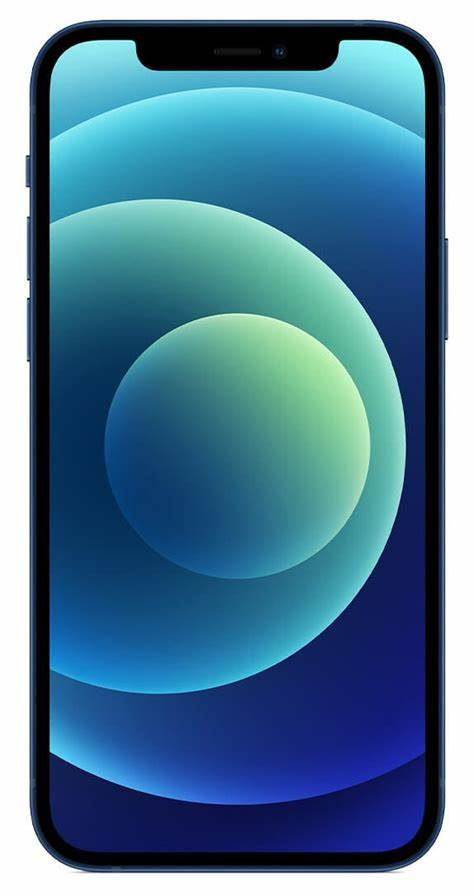
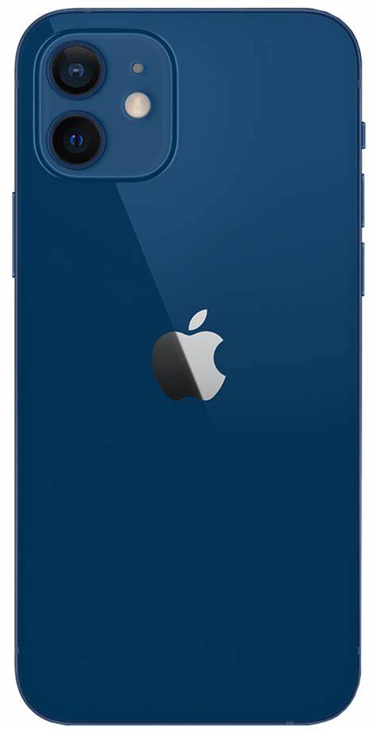
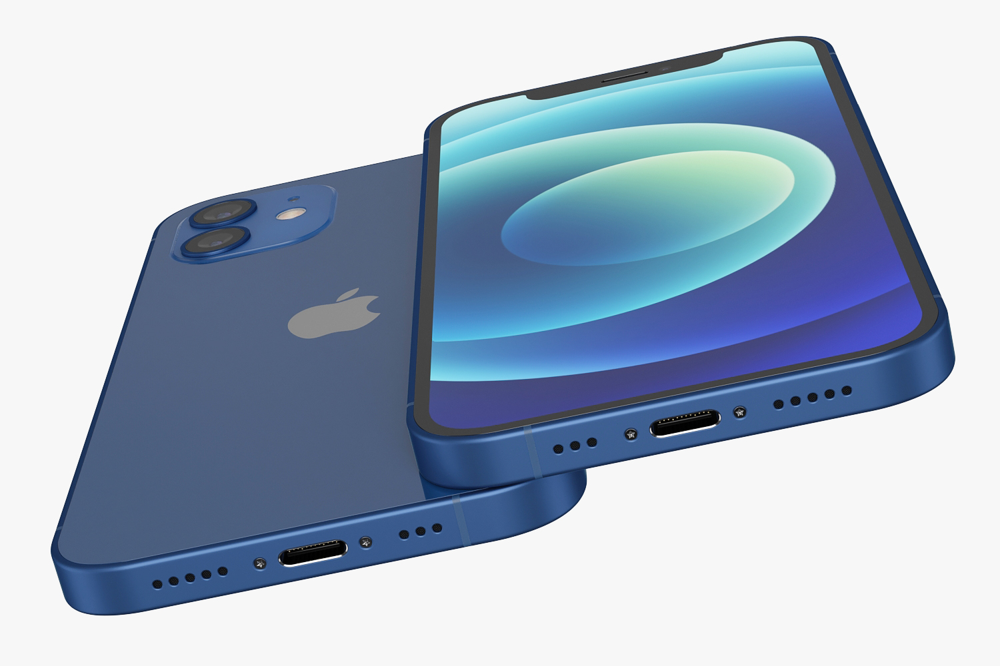
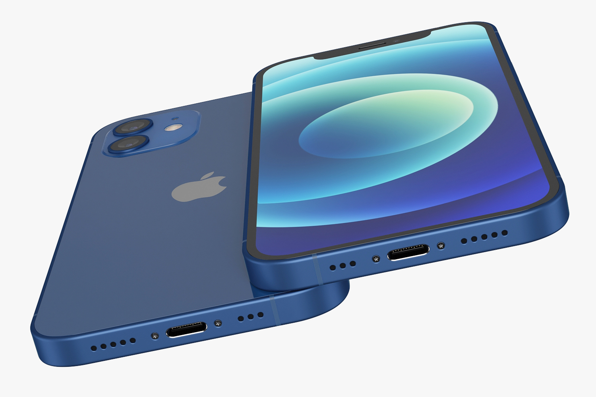

Información iPhone 12
Volver a ProductosDescripción General


El iPhone 12 introdujo un diseño de bordes planos, una pantalla Super Retina XDR y soporte para 5G, mejorando la experiencia visual y la conectividad.
Características Principales
- Pantalla Super Retina XDR de 6.1 pulgadas
- Chip A14 Bionic con arquitectura de 5 nanómetros
- Cámara dual de 12 MP con Ultra Wide y Wide
- Resistencia al agua y al polvo (IP68)
- Compatibilidad con 5G para velocidades de descarga más rápidas
Capacidad y Almacenamiento
El iPhone 12 está disponible en varias capacidades de almacenamiento, permitiendo elegir según tus necesidades:
- 64 GB
- 128 GB
- 256 GB
Galería de Imágenes
 
